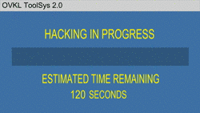

Wilt u leren hoe u HTML moet gebruiken?
Ik heb HTML geleerd via w3schools.Deze website is in het Engels.
Hacked
Hacked
hieronder zal u het verschil zien tussen ul(unodered/bullet list) en ol(ordered/numbered list)
Je kan duidelijk zien dat er bij de eerste lijst er bolletjes voor de woorden staan en bij de 2e lijst nummers
Doe je muis over deze zin om de boodschap te zien.
Deze tekst
is uit elkaar.
Hier zie je een gedicht gemaakt met het "pre" element
My Bonnie lies over the ocean.
My Bonnie lies over the sea.
My Bonnie lies over the ocean.
Oh, bring back my Bonnie to me.
Deze tekst is in het lettertype 'courier'.
Deze tekst is in het normale lettertype
deze tekst is 300% vergroot tegenover het originele
Deze tekst is in de normale grootte.
Dit is de quote van de dag:Get Shit Done
De volgende text zal omgedraaid worden van links naar rechts.
Deze tekst zal geschreven worden van rechts naar linksAls je de tekst normaal ziet (van links naar rechts) dan wil dit zeggen dat je pc geen bi-directionele override accepteerd.